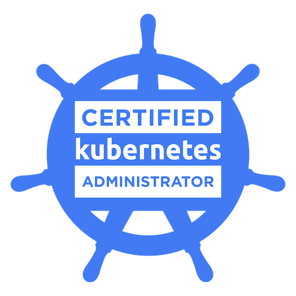
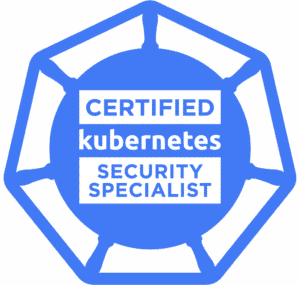
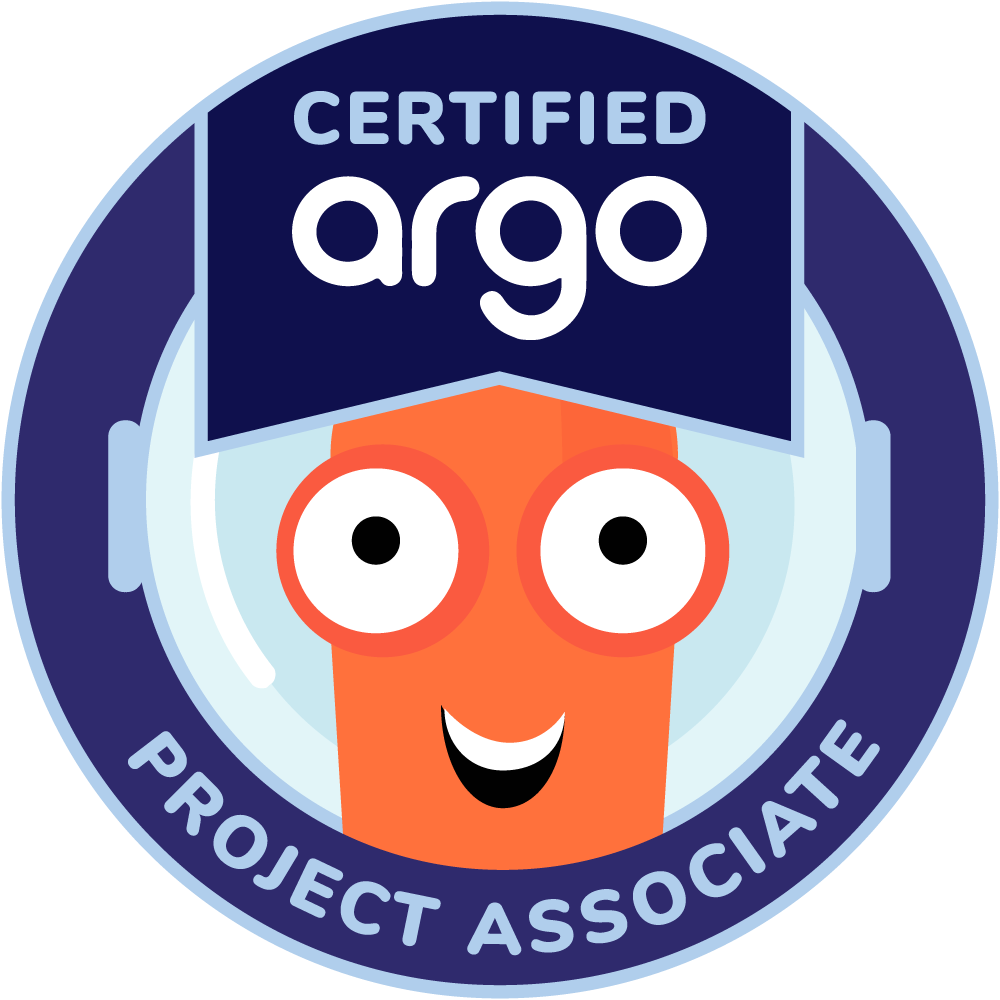
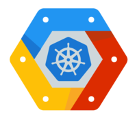

Certified Kubernetes Administrator
CNCF · Linux Foundation
Expert
Platform Engineer / SRE spécialisé Kubernetes & Cloud Native.
Migration cloud, GitOps et sécurisation de clusters — du design à la production.
Certifié CKA & CKS — expert reconnu dans l'écosystème CNCF.
Grand Est, France · Remote Europe · Ouvert CDI & missions freelance
4 certifications actives — Kubernetes, GitOps, Google Cloud

CNCF · Linux Foundation
Expert
CNCF · Linux Foundation
Expert
Linux Foundation
Associate
Google Cloud
ProfessionalProjets réalisés en production lors de mes postes
⬡ Equasens · Nancy, France
Administration et exploitation d'un environnement de production à grande échelle (500+ VM, 8 clusters Kubernetes sur deux Data Centers) : migration cloud-native, GitOps, observabilité, sécurité et déploiement de workloads IA/GPU. Autonomie complète sur les choix d'architecture et de tooling.
Déploiement de workloads d'inférence LLM à forte contrainte de performance sur GPU NVIDIA H200 en production. Partitionnement MIG dynamique, service vLLM avec KV cache offload, isolation des ressources GPU par namespace et monitoring des métriques DCGM via Prometheus.
Déploiement et opération d'une stack Loki distribuée (microservices) pour centraliser les logs de l'ensemble du cluster. Collecte via Alloy, pipelines de parsing, dashboards Grafana et alertes sur les erreurs critiques.
Migration d'applications et de bases de données depuis une infrastructure VM legacy (500+ VM sous VMware, deux Data Centers) vers des architectures conteneurisées et cloud-native. Conteneurisation, manifests Helm, pipelines GitOps ArgoCD et CI/CD (amélioration des DORA metrics), gestion du stateful via opérateurs dédiés.
Administration de bases de données sur VMs puis migration vers une infrastructure conteneurisée. Mise en place du tuning et de l'observabilité selon les besoins métier.
Référent technique des équipes applicatives sur les architectures middleware cloud-native : Data Lakehouse et pipelines de Change Data Capture (CDC) avec Kafka / Debezium. Conception d'une chaîne IaC Terraform/Ansible pour le déploiement automatisé de clusters Kubernetes et de bases de données en Haute Disponibilité.
⬡ Inovea Conseil · Nancy, France
Développement et intégration d'une chaîne CI/CD renforçant la qualité du code et la sécurité du SI. Environnements de développement conteneurisés (Docker & Docker Compose dynamique), évolution de l'ERP Dolibarr et déploiement de bonnes pratiques DevSecOps.
Construction des premières pipelines CI/CD et standardisation des processus de build, test et déploiement, renforçant la qualité du code et la sécurité du SI.
Mise en place d'environnements de développement conteneurisés (Docker & Docker Compose dynamique) améliorant la reproductibilité et l'onboarding. Analyse des besoins clients et évolution de l'ERP Dolibarr avec ajout de fonctionnalités métier.
Domaines de compétences approfondies en production
Orchestration
Administration de clusters Talos Linux en production, Cluster API, isolation réseau Cilium, hardening CKS, GPU workloads.
Livraison continue
Pipelines GitOps avec ArgoCD, gestion des secrets via External Secrets Operator, automatisation des déploiements multi-environnements.
Monitoring · Alerting
Stack kube-prometheus complète, Grafana, Loki, Tempo, SLO/SLI, Percona PMM pour PostgreSQL/MySQL.
Terraform · Ansible
Provisioning déclaratif GCP et Proxmox on-premise via Terraform. Migrations cloud complexes et gestion d'état à grande échelle.
DevSecOps
Hardening Kubernetes niveau CKS : AppArmor, Falco, RBAC granulaire, admission controllers, scanning Trivy, politiques réseau.
Open Source
Background développeur backend (PHP) avant de basculer vers l'infrastructure. Outils et projets Open Source en Go et Python, publiés sur GitHub.
Inférence LLM
Déploiement de workloads à forte contrainte de performance : GPU NVIDIA H200, partitionnement MIG dynamique, service vLLM avec KV cache offload.
Stateful · Streaming
Administration de bases de données et pipelines de streaming : Data Lakehouse et Change Data Capture (CDC) avec Kafka / Debezium, brokers et caches distribués.
wheezy.fr — cluster Kubernetes Talos self-hosted sur Proxmox, géré en GitOps
Un cluster Kubernetes production-grade self-hosted sous le domaine wheezy.fr, opéré 24/7 sur Proxmox. Chaque service tourne sur ce cluster — c'est mon terrain d'expérimentation en conditions réelles.
Provisioning via Terraform, GitOps multi-clusters avec ArgoCD et Renovate, stockage distribué hyperconvergé LINSTOR/DRBD exposé via CSI, sauvegardes Velero sur stockage froid, SSO centralisé Authentik.
Repositories publics — triés par activité
Ouvert aux opportunités CDI et missions freelance.
Remote Europe · Grand Est, France